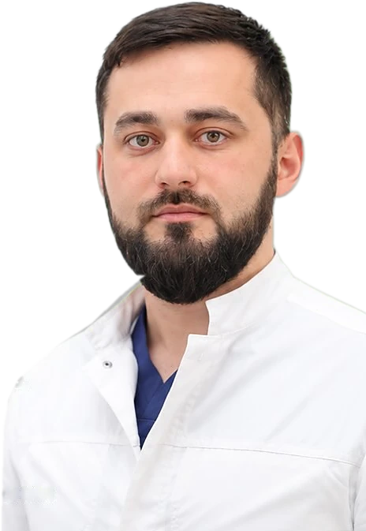
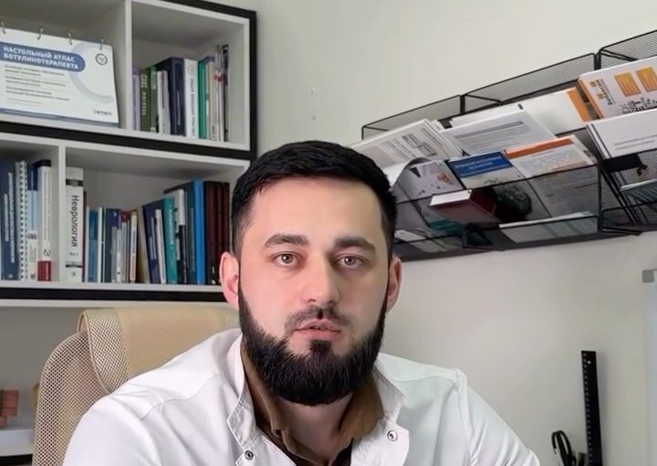
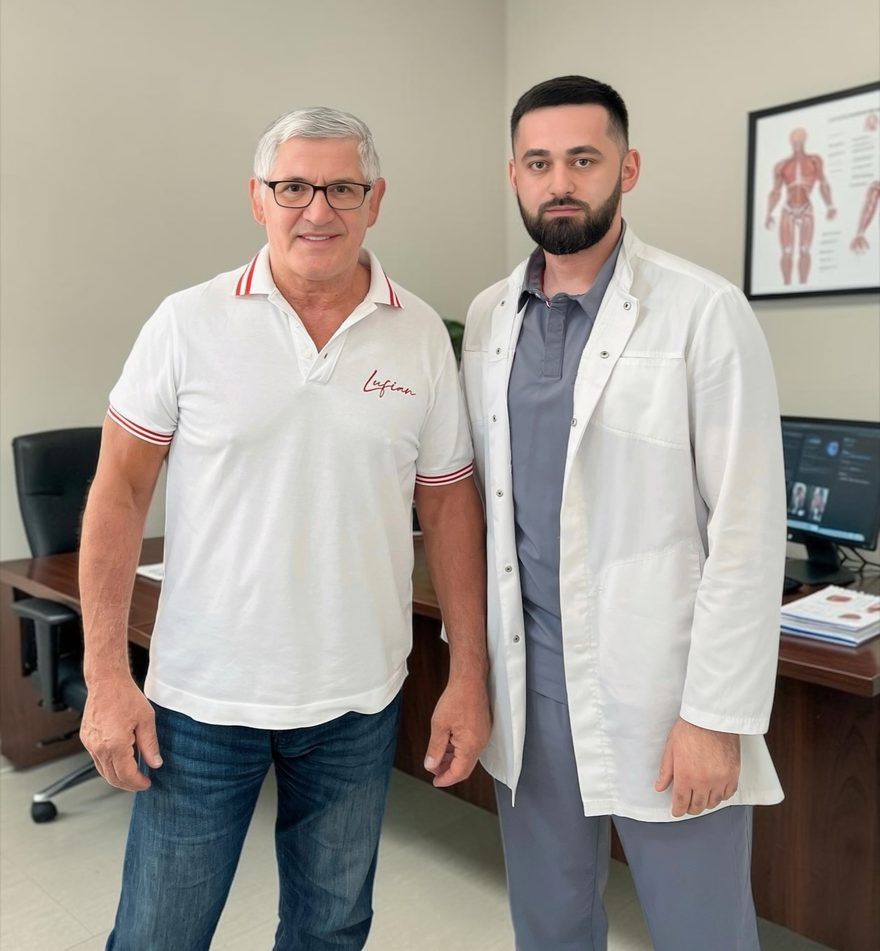

Выслушает до конца
«Внимательно выслушал все жалобы, подробно расспросил о симптомах».
Пациентка, сентябрь 2026Уролог, к которому

прийти с деликатным вопросом.Магомед Солтахович Алиев принимает в Грозном и Серноводске. Запишитесь на приём в WhatsApp.
4,9 ПроДокторов, 34 отзыва УЗИ на месте без лишних анализов объясняет простыми словами Записаться в WhatsAppО таких проблемах неловко говорить даже с близкими. Поэтому визит откладывают и терпят. Для уролога это рабочий разговор: доктор спрашивает по делу и не торопит.
«Выявляю и лечу все болезни мочеполовой системы: медикаментозно и оперативно».
Магомед Солтахович
Строки из проверенных отзывов на ПроДокторов.
«Внимательно выслушал все жалобы, подробно расспросил о симптомах».
Пациентка, сентябрь 2026«Провёл осмотр, на месте сделал УЗИ, подобрал лечение».
Пациент, март 2026«Лишних анализов не навязывает».
Пациент, март 2026«Всё разложил по полочкам, объяснил возможные причины».
Пациентка, сентябрь 2026«Назначил нужное лечение и в ходе контролировал все».
Отзыв родителя, август 2026«Буду обращаться ещё по необходимости и уже не буду так долго тянуть, ведь уже знаю, к кому обратиться».
Пациент, отзыв на ПроДокторов, март 2026
Нажмите «Записаться в WhatsApp». Откроется чат с доктором и готовым сообщением.
Напишите, где вам удобно: Грозный или Серноводск. Описывать проблему не нужно, всё обсудите на приёме.
Доктор ответит и предложит время приёма.
Лечебно-оздоровительный центр «Семейный доктор», ул. Восточная, 4 (район Северного рынка)
Воскресенье, 10:00-14:00
Открыть на картеСерноводская центральная районная больница, ул. Зурабова, 47
Дни приёма уточните в WhatsApp
Открыть на картеОнлайн-консультаций доктор не проводит. Осмотр, диагноз и лечение только на приёме.
В WhatsApp запись на приём
Записаться в WhatsApp

Хасан Жунидович Баиев: известный чеченский пластический хирург. Работал хирургом в СССР, России и США.
«Единственный врач в России, которому в Америке дали международную премию „Врач мира“».
Магомед Солтахович о Хасане Баиеве, Instagram
4,9
★★★★★на ПроДокторов, 34 отзыва
«Я обратился к Алиеву М. С. по рекомендации знакомого (...). У меня была деликатная проблема, с которой долгое время стеснялся обращаться за помощью, врач провёл осмотр, на месте сделал УЗИ, подобрал лечение и помог мне справиться с моим недугом. Магомед Солтахович максимально честно общается с пациентами, лишних анализов не навязывает».
Пациент, «Семейный доктор», март 2026. Проверенный отзыв на ПроДокторов«Были с сыном у Магомеда на приеме по неким проблемам. Он очень хорошо помог нам, сделав все, что нужно. (...) Чётко выполнял свою работу, ответственно и подходил ко всему. Я очень довольна его приемом, назначил нужное лечение и в ходе контролировал все».
Отзыв родителя, Серноводская больница, август 2026. Проверенный отзыв на ПроДокторовЗапишитесь в WhatsApp: достаточно написать город и удобный день, проблему описывать не нужно. На приёме доктор спросит только то, что нужно для диагноза.
В Грозном по воскресеньям, 10:00-14:00, «Семейный доктор», ул. Восточная, 4. В Серноводской больнице дни приёма уточните в WhatsApp.
Нет. Доктор принимает только очно, в Грозном и Серноводском. Осмотр, диагноз и лечение только на приёме. В WhatsApp можно записаться.
Цену назовут при записи.
Возьмите прошлые анализы и заключения, если они есть. О подготовке к УЗИ доктор скажет при записи.
Да. В отзывах есть пациентки и родители с детьми.
Да. Он лечит и лекарствами, и операцией.
Сообщение ни к чему не обязывает. Доктор ответит и предложит время приёма.
Записаться в WhatsApp